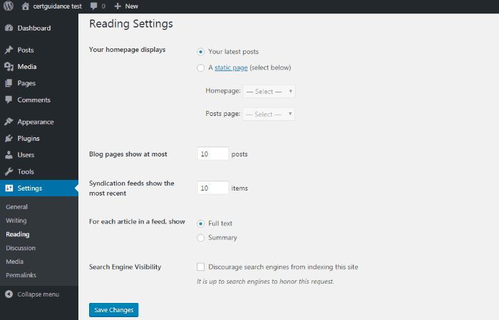

READING SETTINGS TAB
DASHBOARD >> SETTINGS >> READING
Reading Settings control how your site is going to look like, and it provides a handful of control to tweak the look and feel of your WordPress blog. Moreover, these reading options can be used to enhance user experience on your site
These Settings (Reading) control the features related to adding a static homepage, how many posts are going to be shown on a single page or in feed, will it send full article or excerpt in feed, and if you want search engines to index your site
Detail of Reading Tab
- Your Homepage Displays This section is used to display the front page in any of the following format
- Your latest posts It displays latest posts on the front page
- A static page It displays the static pages on the front page
- Front Page You can select the actual page you want to display on front page from the drop down
- Posts Page You can select the page from the drop down which contains posts
- Blog pages show at Most This setting determines how many posts are shown on blog pages at a time. For instance, you may want to only show 5 blog posts at a time, this is where you would set that value
- Syndication feeds show the most Recent Syndication here stands for RSS, (really simple syndication). RSS feeds provide a way for other sites to be able to pull in your posts. You can control how many posts are in your RSS feed
- For each article in a feed Show You can select to send the Full text or Summary (Excerpt). Full text means that the entire article will be included in the RSS feed. Summary means that only the Excerpt (default is first 55 words) would be included in the feed, along with a continue reading link to read the rest of the post
- Search Engine Visibility This option controls your preference if you want your site to be indexed by search engines or not. Checking the option “Discourage search engines from indexing this site”, will ensure that your site is not indexed by search engines
Once you click the save changes button, a confirmation text box will appear notifying you that your settings have been saved.